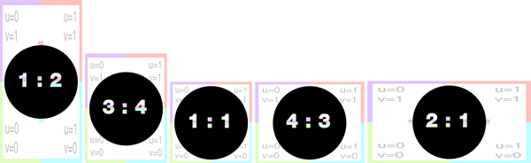
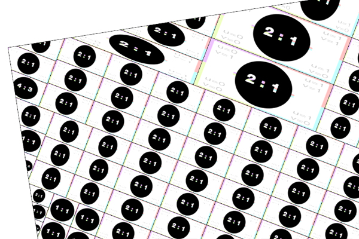
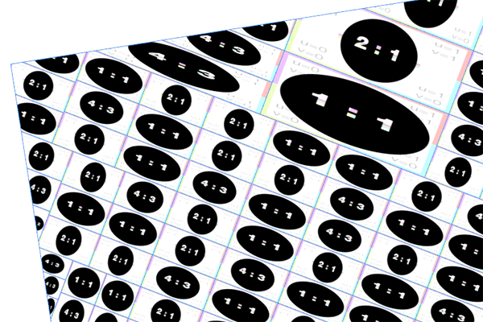

imageApproxRatio function
searchQuery string Search query to apply on list of all files in the workspace. See fileSearch / filesSearch for details about the syntax.
axesRatio string
| "xy", "xz", "yx", "yz", "zx", "zy" | Defines which scope axes ratio is used as a reference. |
n float Number (integer >= 1) of textures to consider (one is randomly picked out of the n best textures).
Returns a texture with one of the n best ratio matches (according to axesRatio).
This function returns one of the n textures with the best ratio match, from the files specified by searchQuery, according to the specified combination of axes.
imageApproxRatio(searchQuery, axesRatio, 1) == imageBestRatio(searchQuery, axesRatio)
Related
Examples
Setting up texturing based on the best pixel ratio
The goal is to set up the texturing, depending on the best pixel ratio of the list of desired textures. The following textures all have different resolutions.

n = 1: "best ratio"

Lot -->
s('0.9,'0.9,'0.9)
center(xz)
RecursiveSplit
RecursiveSplit -->
case scope.sx >= 1.5 && scope.sz >= 1.5:
split(x) { ~scope.sx/3 : split(z) { ~scope.sz/3 : RecursiveSplit }* }*
else: Texture
Texture -->
setupProjection(0, scope.xz, scope.sx, -scope.sz)
projectUV(0)
texture(imageApproxRatio("/myProject/assets/textures/*.jpg", "xz", 1))
n = 3: "choose randomly one of the best three ratios"

Texture -->
setupProjection(0, scope.xz, scope.sx, -scope.sz)
projectUV(0)
texture(imageApproxRatio("/myProject/assets/textures/*.jpg", "xz", 3))